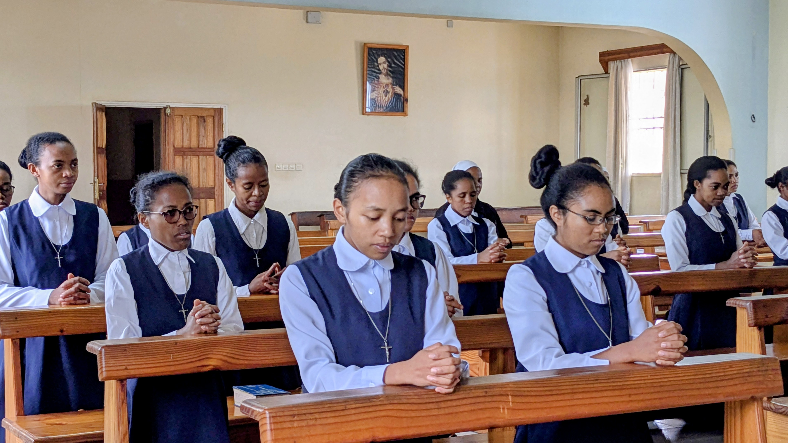
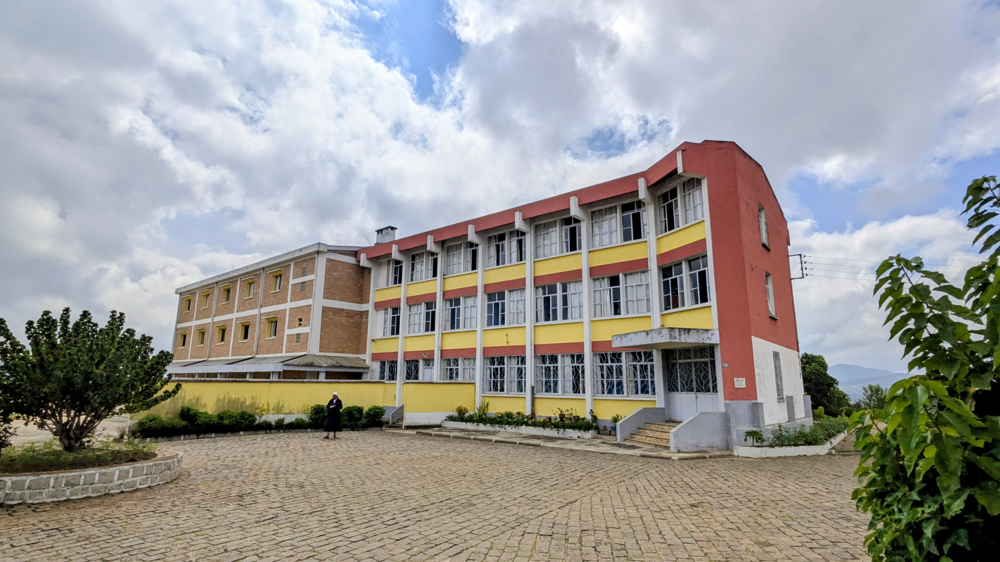

Ny fanorenana tao Raguse (Italie)
Nanomboka tao Sicile Italie ny tantaran'ny fikambanana. Na dia teraka tao anatin'ny fianakaviana manan-kaja sy mpanakarena aza i Mamera Schininà dia nanapa-kevitra ny handao izany rehetra izany. Ny fitiavany lalina ny Fo masin'ny Jesoa no nanosika azy nanorina ny fikambanana mba hanompo ny mahantra, ny marary ary ireo marofy.
" Ho vavolombelon'ny Fitiavan'i Jesoa amin'ny olona rehetra."
Ny fahatongavana teto Madagasikara
Tonga teto Madagasikara tamin'ny taona 1982 tao Imady , diosezin'i Ambositra ny misionera Arak'izany dia ny communauté ao Imady no Maison Mère , izay anisan'ny ahitana ny trano ho an'ny marary hoditra , Dispensaire. Hatramin'izao fotoana izao dia mbola mitohy ny fikarakarana ny marary , fanabeazana amin'ny alalan'ny sekoly 'Saint Michel' ary ny mission any ambanivohitra.


Ampasanimalo - Antananarivo
- sekoly Marie Schininà : sekoly ambaratonga fototra ,hatramin'ny kilasy fahadimy.
- trano fonenana : niorina tamin'ny taona 1983 ny trano voalohany ary tamin'ny taona 2015 ny trano manaraka izay misy ny membre délégation national


Toerana fiofanana ho an'ireo tovovavy hiditra ho masera
Ao amin'ny diosezin'i Fianarantsoa , eny Soahamaninana no misy toeram-panofanana an'ireo zatovovavy miroso ho masera ato amin'ny fikambanana. Mizara ho roa taona ny fiofanana ka mitsinjara arak'izany ireo tovovavy "novice" ny taona voalohany sy ny taona faharoa. Tamin'ny taona 1969 no niorina ny trano. Tsy manao zavatra hafa fa mifantoka tanteraka amin'ny fampiofanana an'ireo "novice" hiroso ho masera ny toerana .


Misy ny akany Fanantenana andraisana an'ireo zaza kamboty
:
- AKANY FANANTENANA : Niorina tamin'ny taona 2000 ny trano , ankehitriny dia misy ankizy kamboty maromaro , tezaina ary beazina ao an-toerana.
- Sekoly Fanantenana: Niorina tamin'ny taona 2001, natao ampianarana sy anabeazana an'ireo zanakin'ny mponina manamorona ny lalana "RN7" . Ahitana ihany koa ny trano ahofa ho an'ireo mpianatra ao amin'ny oniversite . Mirary tanteraka ny saram-pianarana ho fitsinjovana ny ankohonana .


Fanabeazana amin'ny maha olona feno
Izay toerana misy anay dia ahitana sekoly avokoa. Manabe sy mamolavola ny saina mba hahatonga ny olom-pirenena tsirairay ho tonga olom-banona sy hanana hoavy mamiratra.

Ny fianarana no lova tsara indrindra